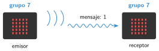
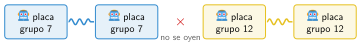

Comunicación por radio
🤔 Pienso5 min
Qué hago aquí: Piensa un momento y contesta con lo que ya sabes. No pasa nada si no lo sabes: es para empezar.
Para hablar con walkie-talkies, los dos tenéis que poner el mismo canal. ¿Qué pasaría si toda la clase usara el mismo canal?
📖 Leo y aprendo15 min
Qué hago aquí: Lee despacio, mira los dibujos y los ejemplos, y quédate con la idea clave del final.
La Micro:Bit tiene una antena. Con ella envía y recibe ondas de radio. Así dos placas se comunican sin cable, hasta unos 20 metros.

A la izquierda, el emisor: al pulsar A, envía un 1. A la derecha, el receptor: al recibir un 1, muestra un corazón.

✏️ Hago25 min
Qué hago aquí: Haz las actividades en orden. Empieza siempre por las básicas.
Escribe vuestro número de grupo: . Comprueba que nadie cerca lo usa.
Programad el emisor y el receptor. Pulsad A. ¿Sale el corazón?
Añadid el botón B: envía un 2. El receptor muestra una cara triste al recibirlo.
Haced un timbre: al pulsar A en una placa, la otra toca una melodía.
Probad el timbre en el pasillo. ¿A qué distancia deja de funcionar? ¿Qué cosas lo empeoran?
✏️ Puedes responder escribiendo, con un dibujo o un esquema, o contándolo en voz alta.
Arregla el programa. Pasad el emisor del ejemplo a una placa y este receptor a otra. Pulsáis A y no sale nada. Abridlo y buscad el error. ¿Qué habéis cambiado?
💻 Ábrelo en MakeCode El programa se abre en MakeCode, listo para probar y cambiar.
🚀 Amplío (si quieres saber más)
Qué hago aquí: ¿Has terminado? Lee la curiosidad o elige el reto. Es voluntario.
Piedra, papel o tijera por radio. Al agitar, cada placa elige un número del 1 al 3, lo muestra y lo envía. Al recibir el del rival, muestra quién gana.
✅ Compruebo5 min
Qué hago aquí: Contesta sin mirar la ficha y marca cómo lo llevas.